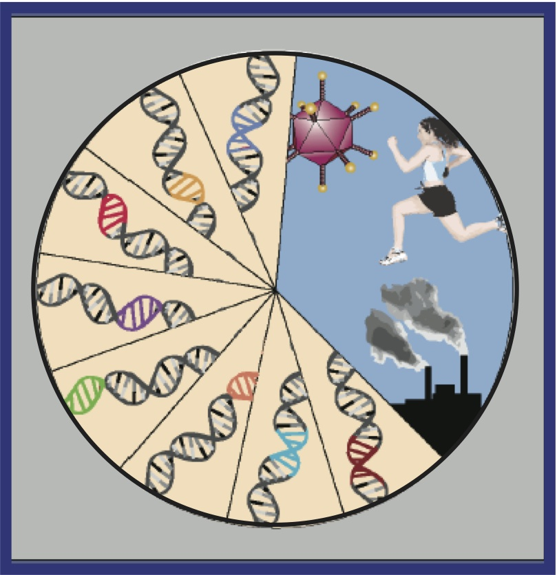

|  | Funding Source: NIAID Career Transition Award (K22) Autoimmune disorders such as inflammatory bowel disease (IBD) and rheumatoid arthritis (RA) are characterized by an inappropriate inflammatory response against self, resulting in tissue destruction. Such immune-mediated disorders result from a complex interplay of genetic and environmental factors although knowledge of their pathogenic mechanisms remains limited. Extraordinary technical advances in the field of human genetics over the last decade have catalyzed an explosion of new information about the genetics of autoimmune diseases. Genome-wide association studies (GWAS) have discovered hundreds of common genetic variants that predispose humans to autoimmune diseases. However, the vast majority of disease-associated genetic variants are outside protein-coding sequences, complicating their functional assessment. There is now overwhelming evidence that many non-coding variants contribute to disease by altering transcription factor binding sites at enhancer elements of key genes. We would develop system-based methodolodies to superimpose genomic locations of active enhancers in human immune cells on loci associated with diseases such as inflammatory bowel disease (IBD) and rheumatoid arthritis (RA). The ultimate goal is to identify genes, pathways, and cell types that are affected by variants associated with autoimmune diseases (Image adopted from Manolio, JCI, 2008). |
G. Vahedi, Y. Kanno, Y. Furumoto, K. Jiang, S. Parker, M. Erdos, S. Davis, R. Roychoudhuri, N. Restifo, M. Gadina, Z. Tang, Y. Ruan, F.S. Collins, V. Sartorelli, JJ. O'Shea, “Super-enhancers Delineate Disease-Associated Regulatory Nodes in T Cells”, Nature, February 2015.